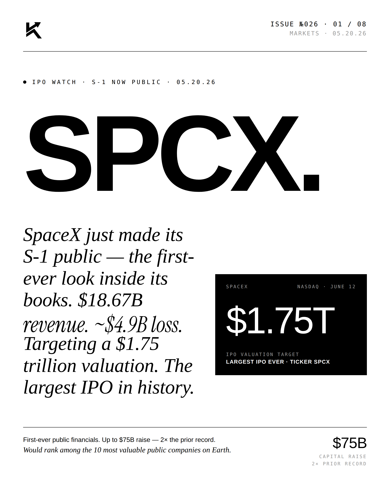
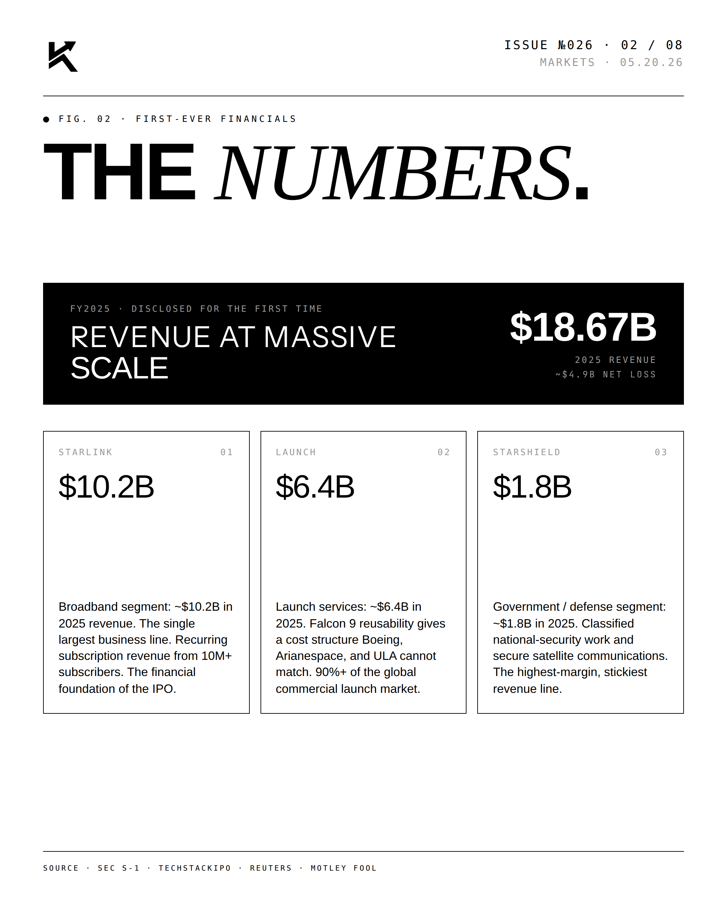
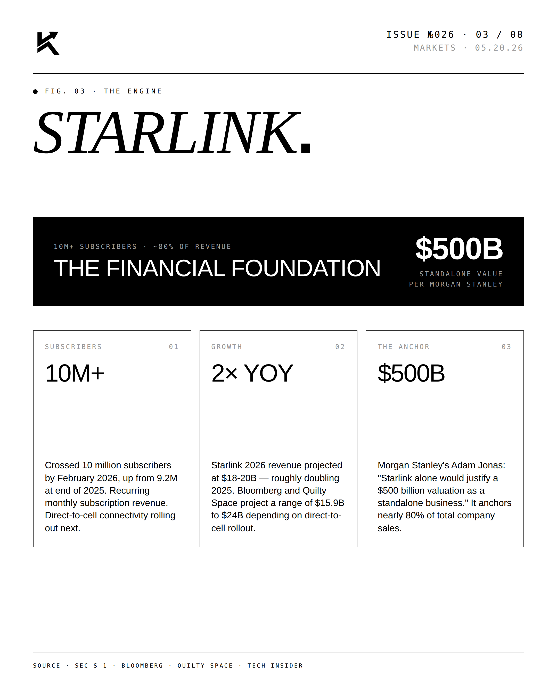
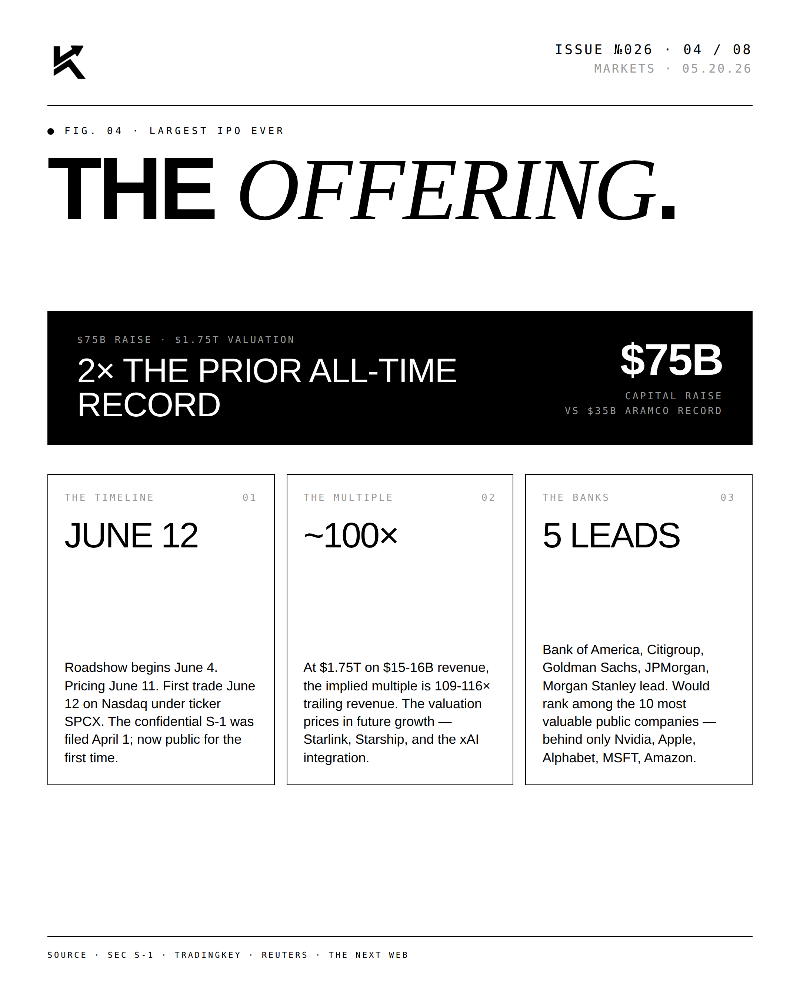
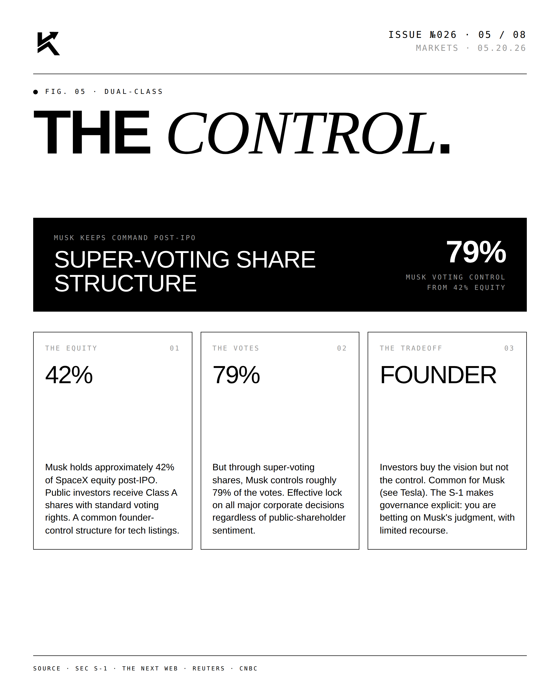
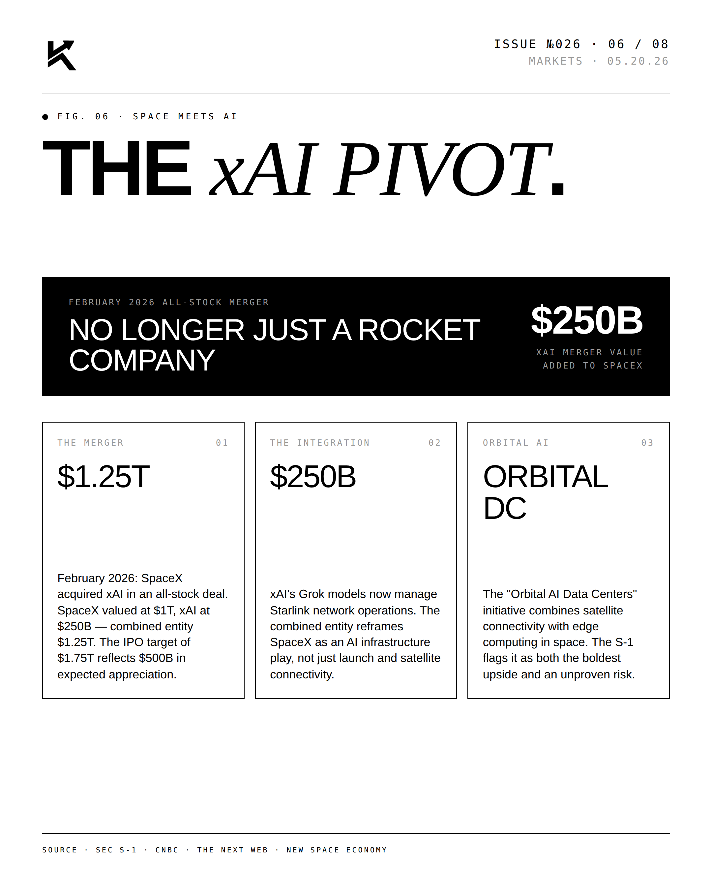
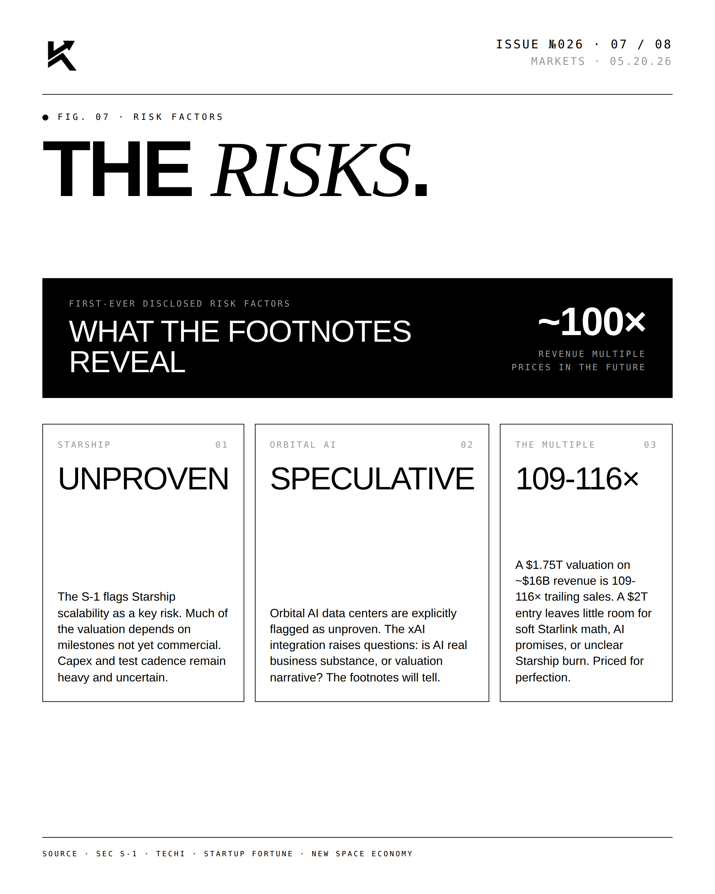
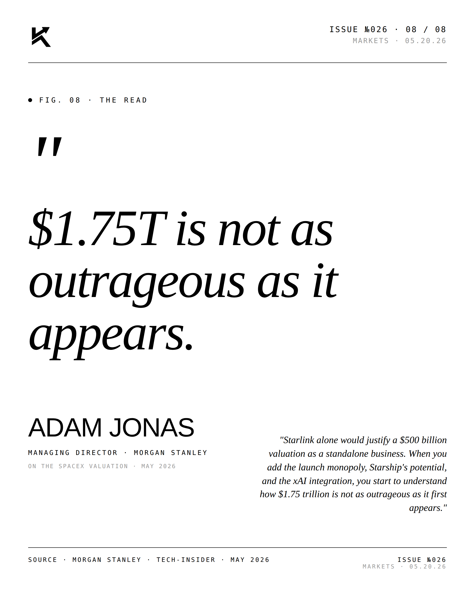

SPCX.
SpaceX filed its S-1 — the first-ever look inside its books. $18.67B revenue, ~$4.9B net loss, targeting a $1.75 trillion valuation and up to a $75B raise: the largest IPO in history. Ticker: SPCX.

The Lead.
First-ever public financials reveal a company that would rank among the ten most valuable public companies on Earth at its target. The raise — up to $75B — is roughly 2× the prior record. The S-1 also formalizes the February 2026 all-stock acquisition of xAI: SpaceX at $1T, xAI at $250B, combined $1.25T, with the $1.75T target reflecting expected appreciation. Grok now manages Starlink network operations, and the “Orbital AI Data Centers” initiative is flagged as both the boldest upside and an unproven risk.






"$1.75T is not as
outrageous as it appears."ADAM JONASManaging Director · Morgan Stanley · 05.20.26
"Starlink alone would justify a $500 billion valuation as a standalone business. When you add the launch monopoly, Starship's potential, and the xAI integration, you start to understand how $1.75 trillion is not as outrageous as it first appears." — Adam Jonas, Morgan Stanley.

Disclosure
The author is a Limited Partner in 1789 Capital, which holds positions in SpaceX and xAI, both referenced in this post. Personal commentary and editorial analysis. Not investment advice, not an offer or solicitation.